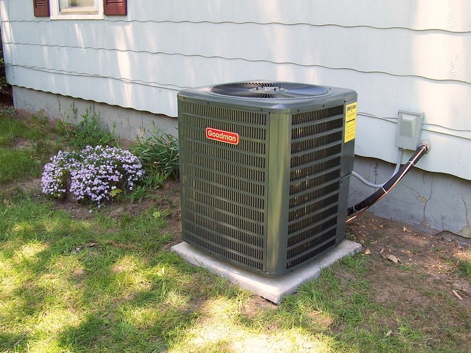
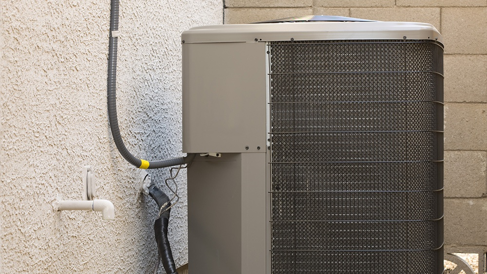

- home
- about
- services
- installation
- repair
- servicing
- contacts
- feedback

MRCOOL Universal Residential 3-Ton 18-Seer Central Air Conditioner. The MRCOOL 2-3 ton universal DC inverter central Heat pump is a radical home heating and cooling technology. Unlike previous generation heat pumps, the universal can cool efficiently all summer long and heat effectively even when the temperature drops to as much as -20 degrees Fahrenheit. Room Air Conditioners - Lowe'sGE 150-sq ft Window Air Conditioner (115-Volt; 5000-BTU) GE Appliances is dedicated to providing the right solutions for rooms of any size. Window air conditioners are designed to offer exceptional comfort while remaining quiet, and our latest connected technology makes these products versatile and easy to use. 1190.

ac repair